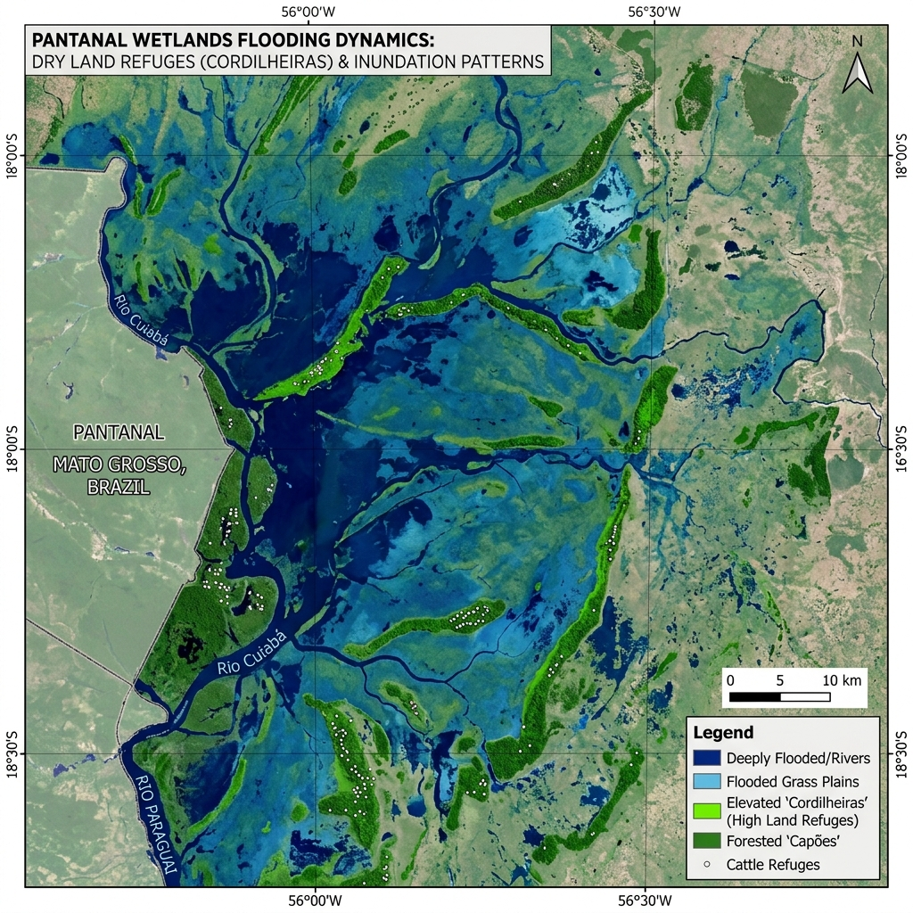
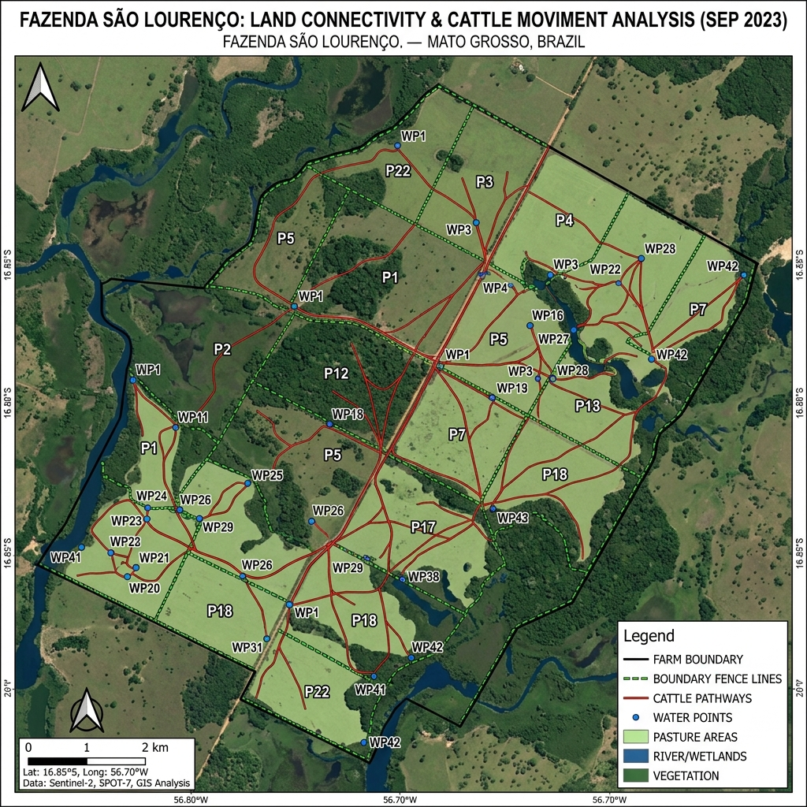

Posse em Áreas de Pasto Nativo: A Geointeligência no Pantanal do Paiaguás
André Ricartes
Especialista em Geointeligência Rural
Introdução: O Desafio da Posse no "Coração" do Pantanal
Comprovar a posse de uma área de apenas 2% dentro de uma grande fazenda no Pantanal do MS é um dos maiores desafios periciais que existem. Na região do Paiaguás, onde não há cercas internas em todas as divisas e as benfeitorias são raras, a prova testemunhal costuma ser frágil.
Como provar o uso da terra quando a atividade é o gado extensivo em pasto nativo? A resposta não está em construções, mas na análise de dados espaciais.
1. A Invisibilidade das Benfeitorias vs. A Visibilidade dos Dados
Em áreas de invernada pantaneira, a ausência de currais ou casas na fração ocupada não significa ausência de posse. No caso que analisamos, o uso é estritamente de pastejo.
O Obstáculo: Como não há benfeitorias, os métodos tradicionais de vistoria falham.
A Solução de Geointeligência: Focamos nos trechos de cerca de divisa ao norte e na conectividade da área com o restante da invernada. O dado de satélite comprova que, embora a área seja pequena em relação ao todo, ela é parte integrante do fluxo de pastejo da propriedade.

2. Decifrando o Pasto Nativo via Satélite
Diferente de pastagens plantadas (como a Brachiaria), o pasto nativo do Pantanal exige uma calibração fina nos sensores.
Utilizando uma longa série histórica de imagens orbitais (como SPOT 5 e Sentinel-2), mapeamos a persistência do uso:
- Mesmo em períodos de cheia, identificamos as áreas de refúgio e o retorno imediato do gado após a vazante.
- A prova da posse se dá pela manutenção de carreadores e malhadouros que ligam a área de disputa ao restante da fazenda.

3. Por que a Prova Tecnológica é Vital no MS?
No Mato Grosso do Sul, as disputas territoriais no bioma Pantanal são complexas. O laudo de geointeligência atua como um "testemunho ocular histórico" que:
- Identifica que o pasto nativo foi mantido e manejado (não é área abandonada).
- Confirma que a cerca ao norte define um limite de controle territorial.
- Traz segurança jurídica ao demonstrar que 2% de uma área podem ser o diferencial estratégico de uma invernada inteira.
Conclusão: Inteligência Territorial como Vantagem Processual
A posse no Paiaguás é sutil, mas deixa rastros. Para advogados e produtores, trocar o "eu acho" pelo "o dado prova" é a diferença entre manter ou perder o direito sobre a terra.